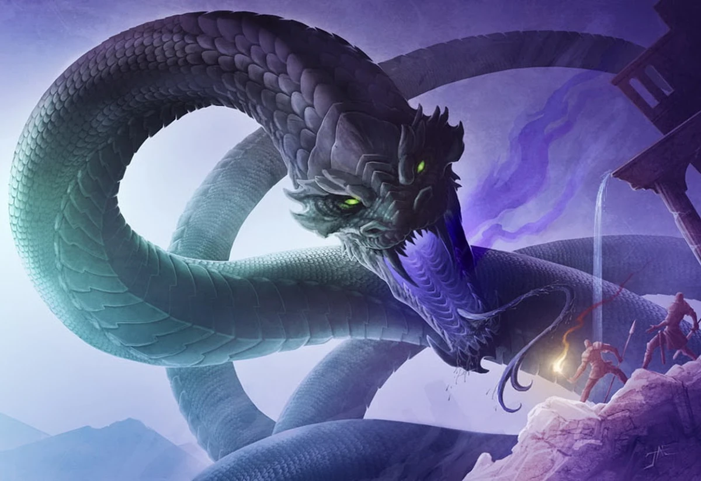

01 / ADVENTURE
Odwrócić noc.
Turn Back the Endless Night (DDAL07-18) to finałowa część serii Broken Chains osadzonej w sezonie Tomb of Annihilation. Akcja prowadzi przez Peaks of Flame, Maze of Ubtao i ku Iron Door.

Peaks of Flame. Maze of Ubtao. Iron Door. Trasa tej przygody prowadzi w dół, ku miejscom, gdzie noc przestaje być porą dnia i staje się zagrożeniem.
Turn Back the Endless Night (DDAL07-18) to finałowa część serii Broken Chains osadzonej w sezonie Tomb of Annihilation. Akcja prowadzi przez Peaks of Flame, Maze of Ubtao i ku Iron Door.
Michał
Mat
Diana
koksuvi
Viking
Noc może być wydarzeniem. Dlatego trzeba ją cofnąć.PEAKS OF FLAME · MAZE OF UBTAO · IRON DOOR